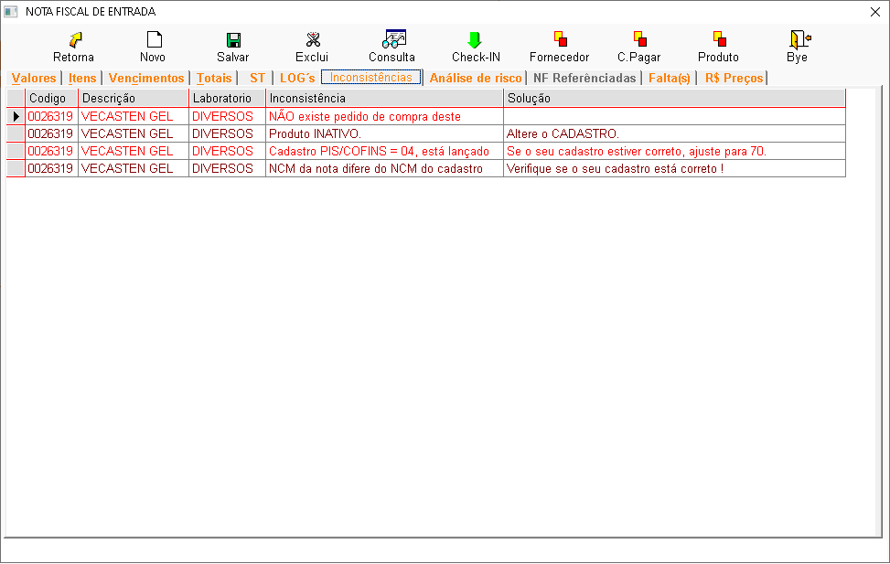
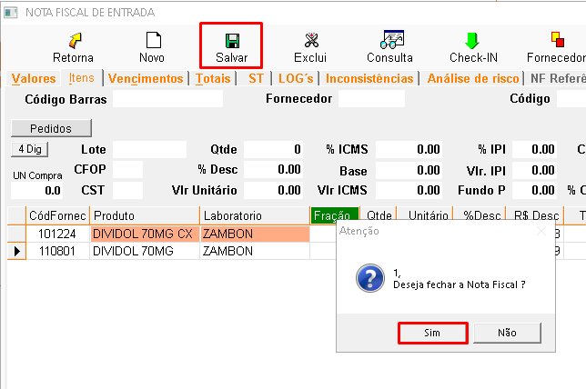

O que é Nota fiscal de entrada?
A entrada de mercadorias é um processo muito importante para o controle da farmacia, nela entrará a mercadoria comprada pela farmacia junto ao fornecedor, com todas as informações de custo e tributações enviados em um XML.
+Consulta
- Para poder procurar e importar uma nota fiscal, clique em consulta.

- E na tela seguinte clique em XML.

- No importador de XML, você pode localizar um arquivo XML já baixado em seu computador, indicando o caminho completo na opção "Diretório/pasta".
- A opção "Baixar XML" possibilita a busca por um arquivo específico por meio de sua chave de acesso, sendo realizada diretamente na SEFAZ com o uso do certificado digital.
- A opção "Lista de Notas" apresenta todos os XMLs emitidos para o CNPJ associado ao certificado digital.
- Ao clicar em 'Abrir XML', serão exibidos todos os produtos constantes na nota fiscal.
- Nessa etapa, é fundamental conferir a vinculação dos produtos da nota com os já cadastrados no sistema.
- Caso o produto não exista, será necessário criar um novo cadastro.
- Para agilizar esse processo, você pode buscar um produto semelhante já existente e clicar em 'Copiar Cadastro'. Dessa forma, será criado um novo cadastro com as mesmas informações do produto original, permitindo que você realize as alterações necessárias, como código de barras, valores e descrição, de acordo com os dados da nota fiscal.
- Após concluir a vinculação dos produtos, clique em 'Importar Nota'.


+Filtro de compra
- Após a importação, a nota fiscal estará disponível para ser incluída no sistema.
- Basta filtrar as notas pelo período em que a importação foi realizada, e ela será aberta na aba
'Notas'.

+Notas
- Esta aba exibirá as notas fiscais importadas que correspondem aos critérios de busca aplicados.
- É possível visualizar o status de cada nota. As notas com status 'Aberta' ainda não foram salvas no sistema e requerem a confirmação das informações para serem processadas.
- As notas com status 'Fechada' já foram importadas e salvas, mas podem ser editadas se necessário.
- Para visualizar o conteúdo de uma nota, seja ela aberta ou fechada, basta selecioná-la e pressionar
a tecla Enter.

+Aba valores
- A aba valores preenche automaticamente os campos com os dados da nota, como fornecedor, produtos, valores e impostos.
- Caso haja algum erro, você pode editá-lo diretamente na tela.

+Aba itens
- A aba Itens apresenta todos os produtos adquiridos na nota fiscal. Cada linha da tabela representa um item, com informações como quantidade, valor unitário, descontos e impostos.
- É importante verificar se todos os dados estão corretos, pois eles serão utilizados para atualizar o estoque e gerar os lançamentos contábeis.
- É possível acessar o cadastro do produto clicando na opção "Produto", caso seja necessário realizar alterações.
- É importante informar a fração de venda. Por exemplo, se 1 fardo de fraldas contém 8 pacotes, deve-se informar o número "8" na fração. Assim, o sistema dividirá automaticamente o valor total do fardo por 8.
- A coluna % ICMS indica a alíquota do Imposto sobre Circulação de Mercadorias e Serviços incidente sobre o produto. As colunas PIS e COFINS referem-se a outros impostos federais. O valor TT c/Desc é o valor total do item após os descontos e a aplicação dos impostos.
- Dando dois cliques no item irá abrir a tela de alteraçao de preços, onde é possivel editar os valores de venda praticados pela farmacia.


+Aba vencimentos
- A Aba Vencimentos apresenta os boletos a pagar das compras de mercadorias realizadas pela farmácia.
- Nela, você encontrará as datas de vencimento de cada fatura e o valor a ser pago.
- Ao consultar esta tela, você poderá se organizar para efetuar os pagamentos dentro do prazo e evitar atrasos.
- Após salvar a entrada esses boletos vão entrar em suas contas a pagar.

+Aba totais
- A aba totais apresenta um resumo completo de todos os valores envolvidos na transação.
- Nela, você encontra o valor total da compra, os descontos obtidos, os impostos incidentes e o valor final a ser pago.
- É importante observar que os valores de IPI, frete e despesas compõem a base de cálculo dos impostos PIS e COFINS, conforme destacado na imagem. Isso significa que esses valores influenciam diretamente o cálculo desses impostos.
- Utilizando esta tela, você pode conferir se todos os valores estão corretos.

+Aba ST
- A aba ST é utilizada para definir como o imposto ST será calculado e registrado na nota fiscal.
- A Substituição Tributária é um regime tributário especial em que o imposto é recolhido antecipadamente por um contribuinte.
- O campo Tipo indica a situação específica da operação e influencia no cálculo do imposto. Por exemplo, se a opção for '1 - Pagamento de substituição tributária efetuada pelo destinatário', o valor do imposto será ajustado de acordo com essa condição.
- É fundamental que os campos Base ST Complementar e Valor ST Complementar sejam preenchidos de acordo com as informações da nota fiscal, para garantir a correta contabilização do imposto.

+Aba Logs
- A aba LOG's apresenta um histórico detalhado de todas as ações realizadas na importação de notas fiscais eletrônicas.
- Cada linha do registro corresponde a uma ação específica, indicando a data, hora, usuário responsável, equipamento utilizado e uma descrição detalhada da operação.
- Ao consultar os logs, é possível identificar quando uma determinada NF-e foi importada, por quem e quais foram os detalhes da operação.
- Essa informação é fundamental para realizar auditorias, solucionar problemas e garantir a integridade dos dados.

+Aba inconsistencia
- A aba Inconsistências apresenta uma lista detalhada dos problemas encontrados durante a importação da nota fiscal.
- Essas inconsistências podem ser causadas por erros de digitação, divergências entre os cadastros do sistema e a nota fiscal, ou outras razões.
- Para cada inconsistência encontrada, a tela indica o produto, o tipo de problema e uma sugestão de solução.

+Aba analise de risco
- A aba analise de risco apresenta uma lista de produtos que podem gerar prejuízos para a farmácia.
- A análise considera fatores como a data de validade e a rotatividade dos produtos.
- Produtos marcados como 'inviável/Sem vendas' estão próximos do vencimento e não têm sido vendidos, indicando um alto risco de perda.
- Ao analisar este relatório, o usuário pode tomar decisões estratégicas para reduzir perdas, como criar promoções para produtos próximos do vencimento, ajustar os pedidos de compra e otimizar a gestão de estoque.

+Aba faltas
- A aba Faltas é utilizada para registrar as diferenças entre a quantidade de produtos solicitados em uma nota fiscal e a quantidade efetivamente recebida.
- Essas diferenças podem ocorrer por diversos motivos, como erros na emissão da nota fiscal ou problemas no transporte.
- Ao identificar uma falta, o usuário deve preencher os campos da tela com as informações do produto e da quantidade faltante.
- As opções "Abater C.M." e "Financeiro" permitem definir como a falta será tratada em relação ao cálculo do custo médio e à geração de um débito financeiro.
- É importante registrar todas as faltas para acompanhar o desempenho dos fornecedores e tomar as medidas necessárias para evitar que elas se repitam.

+Aba preços
- A aba preços apresenta um resumo das informações mais importantes sobre cada produto, como histórico de vendas, preços e promoções.
- Ao analisar esta tela, o usuário pode identificar produtos com baixo desempenho, avaliar o impacto de promoções e tomar decisões estratégicas para otimizar o mix de produtos e aumentar as vendas.
- Embora a tela não apresente um campo específico para indicar faltas, é possível identificar produtos com possível falta comparando a quantidade vendida com a quantidade em estoque.

+Fechamento de nota
- Após realizar a conferencia da entrada, clique em salvar e em sim, para que o sistema possa
finalizar a entrada e atualizar o cadastro dos itens da nota.
